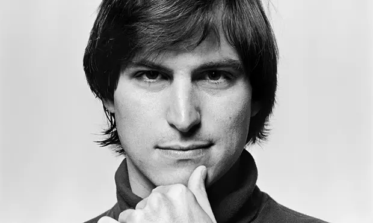

Steve Jobs
هو الرجل الذي أحب الابتكار

ستيف جوبز في العشرينات من عمره مع الإصدار المبكر من Macintosh
فيما يلي خط زمني لحياة ستيف جوب:
- 1955 - ولد ستيفن جوبز في 24 فبراير 1955 في سان فرانسيسكو، كاليفورنيا، وتبناه بول وكلارا جوبز. نشأ مع أخت واحدة، باتي. كان بول جوبز ميكانيكيًا وتصليح السيارات كهواية.
- 1972 - بعد تخرجه من المدرسة الثانوية في عام 1972، التحق جوبز بكلية ريد في بورتلاند بولاية أوريغون لمدة عامين. ترك الدراسة بعد فصل دراسي واحد لزيارة الهند ودراسة الديانات الشرقية في صيف عام 1974 .
- 1975 - في عام 1975، انضم جوبز إلى مجموعة تعرف باسم Homebrew Computer Club. كان أحد الأعضاء، وهو خبير تقني يدعى ستيف وزنياك، يحاول بناء جهاز كمبيوتر. حضر جوبز ووزنياك اجتماعات نادي Homebrew Computer Club في عام 1975، والذي كان بمثابة نقطة انطلاق لتطوير وتسويق أول كمبيوتر من شركة Apple.
- 1976 - في عام 1976 قام هو ووزنياك بتأسيس شركتهما الخاصة. أطلقوا عليها اسم شركة أبل للكمبيوتر، تخليدًا لذكرى الصيف السعيد الذي قضاه جوبز في قطف التفاح. لقد جمعوا 1300 دولار من أموال الشركة الناشئة عن طريق بيع الميكروباص الخاص بجوبز والآلة الحاسبة الخاصة بوزنياك. في البداية قاموا ببيع لوحات الدوائر (اللوحات التي تحتوي على المكونات الداخلية للكمبيوتر) أثناء عملهم على النموذج الأولي للكمبيوتر (عينة).
- 1984 - في عام 1984 قدمت شركة أبل نموذجًا ثوريًا جديدًا، وهو جهاز ماكنتوش. تحتوي الشاشة التي تظهر على الشاشة على صور صغيرة تسمى الرموز. لاستخدام الكمبيوتر، أشار المستخدم إلى أيقونة ثم نقر على زر باستخدام جهاز جديد يسمى الماوس. جعلت هذه العملية نظام Macintosh سهل الاستخدام للغاية. ومع ذلك، لم يتم بيع جهاز Macintosh بشكل جيد للشركات. كان يفتقر إلى الميزات المتوفرة في أجهزة الكمبيوتر الشخصية الأخرى، مثل الطابعة ذات الجودة العالية.
- 1985 - كان فشل نظام ماكنتوش بمثابة إشارة إلى بداية سقوط جوبز في شركة أبل. استقال جوبز في عام 1985 من الشركة التي ساعد في تأسيسها، على الرغم من احتفاظه بلقبه كرئيس لمجلس إدارتها..
- 1988 - وسرعان ما قام جوبز بتعيين بعض موظفيه السابقين لبدء شركة كمبيوتر جديدة تسمى NeXT. في أواخر عام 1988، تم طرح كمبيوتر NeXT في حفل كبير أقيم في سان فرانسيسكو، وكان يستهدف السوق التعليمية. وكانت ردود الفعل الأولية جيدة بشكل عام. كان المنتج سهل الاستخدام للغاية، وكان يتمتع بسرعة معالجة عالية، وعروض رسومات ممتازة، ونظام صوت رائع. على الرغم من الاستقبال الحار، إلا أن جهاز NeXT لم ينتشر أبدًا. وكان مكلفًا للغاية، وكان مزودًا بشاشة بالأبيض والأسود، ولا يمكن ربطه بأجهزة كمبيوتر أخرى أو تشغيل برامج مشتركة.
- 1986 - ومع ذلك، لم يكن NeXT نهاية ستيف جوبز. في عام 1986، اشترى جوبز شركة صغيرة تدعى بيكسار من المخرج جورج لوكاس (1944–). شركة بيكسار متخصصة في الرسوم المتحركة بالكمبيوتر. وبعد تسع سنوات، أصدرت بيكسار فيلم Toy Story، الذي حقق نجاحًا كبيرًا في شباك التذاكر. واصلت بيكسار لاحقًا إنتاج Toy Story 2 وA Bug's Life، اللذين وزعتهما ديزني، وMonsters, Inc. وقد حققت كل هذه الأفلام نجاحًا كبيرًا. حققت شركة Monsters، Inc. أكبر مبيعات تذاكر افتتاحية لعطلة نهاية الأسبوع لأي فيلم رسوم متحركة في التاريخ.
- 1996 - في مقال نشرته مجلة تايم في فبراير 1996، قال جوبز: "الشيء الذي يدفعني وزملائي هو أنك ترى شيئًا مقنعًا للغاية بالنسبة لك، ولا تعرف تمامًا كيفية الحصول عليه، لكنك تعلم، بشكل حدسي أحيانًا، "إنه في متناول يدك. ويستحق الأمر أن تقضي سنوات من حياتك لإخراجه إلى حيز الوجود. " لقد عمل جوبز بجد لترجمة أفكاره إلى منتجات مثيرة ومبتكرة للشركات والمستهلكين. وكان له دور فعال في إطلاق عصر الكمبيوتر الشخصي. ستيف جوبز هو حقًا صاحب رؤية في مجال صناعة الكمبيوتر.
في ديسمبر من عام 1996، اشترت شركة Apple برنامج NeXT مقابل ما يزيد عن 400 مليون دولار. عاد جوبز إلى شركة أبل كمستشار بدوام جزئي للرئيس التنفيذي (CEO). وفي العام التالي، وفي حدث مفاجئ، دخلت شركة أبل في شراكة مع منافستها مايكروسوفت. وبحسب صحيفة نيويورك تايمز، فإن الشركتين "اتفقتا على التعاون في عدة مجالات تتعلق بالمبيعات والتكنولوجيا". على مدار السنوات الست التالية، قدمت شركة Apple العديد من المنتجات الجديدة واستراتيجيات التسويق. - 1997 - في نوفمبر 1997، أعلن جوبز أن شركة أبل ستبيع أجهزة الكمبيوتر مباشرة للمستخدمين عبر الإنترنت وعبر الهاتف. حقق متجر Apple نجاحًا هائلاً. وفي غضون أسبوع أصبح ثالث أكبر موقع للتجارة الإلكترونية على الإنترنت. في سبتمبر من عام 1997، تم تعيين جوبز مديرًا تنفيذيًا مؤقتًا لشركة أبل.
في عام 1998، أعلن جوبز عن إطلاق جهاز iMac، الذي يتميز بحوسبة قوية بسعر مناسب. تم الكشف عن iBook في يوليو 1999. وهو كمبيوتر محمول على شكل محار ومتوفر بألوان زاهية. وهو يشتمل على AirPort من Apple، وهو إصدار كمبيوتر للهاتف اللاسلكي يسمح للمستخدم بتصفح الإنترنت لاسلكيًا. في يناير 2000 كشف جوبز عن استراتيجية أبل الجديدة للإنترنت. وتضمنت مجموعة من التطبيقات المستندة إلى الإنترنت لنظام التشغيل Macintosh فقط. كما أعلن جوبز أنه أصبح الرئيس التنفيذي الدائم لشركة أبل. - 2005 - بدأ ستيف جوبز مع فريقه في شركة Apple العمل على أول هاتف iPhone في عام 2005 وتم إصدار أول iPhone في 29 يونيو 2007. وقد أحدث iPhone ضجة كبيرة لدرجة أن استطلاعًا أشار إلى أن ستة من كل عشرة أمريكيين كانوا على علم بإصداره. أعلنت مجلة تايم أنه "اختراع العام" لعام 2007.
- 2011 - توفي جوبز في منزله في بالو ألتو بولاية كاليفورنيا حوالي الساعة الثالثة بعد الظهر. (PDT) في 5 أكتوبر 2011، بسبب مضاعفات ناجمة عن انتكاسة ورم الغدد الصم العصبية البنكرياسي في خلايا الجزيرة، مما أدى إلى توقف التنفس. كان قد فقد وعيه في اليوم السابق وتوفي مع زوجته وأطفاله وأخواته إلى جانبه. وصفت شقيقته، منى سيمبسون، وفاته على النحو التالي: "كانت كلمات ستيف الأخيرة، قبل ساعات، أحادية المقطع، وتكررت ثلاث مرات. قبل الركوب، كان ينظر إلى أخته باتي، ثم لفترة طويلة إلى أطفاله، ثم إلى أطفاله". شريك الحياة، لورين، ثم فوق أكتافهم. وكانت كلمات ستيف الأخيرة: "أوه واو. أوه واو. أوه واو." ثم فقد وعيه وتوفي بعد عدة ساعات. أقيمت جنازة خاصة صغيرة في 7 أكتوبر 2011، ولم يتم الإعلان عن تفاصيلها احتراما لعائلة جوبز..
لقد كنت محظوظًا بدخول مجال الكمبيوتر عندما كانت صناعة صغيرة جدًا ومثالية. لم يكن هناك الكثير من الدرجات العلمية المقدمة في علوم الكمبيوتر، لذلك كان الأشخاص الذين يعملون في أجهزة الكمبيوتر أشخاصًا لامعين في الرياضيات والفيزياء والموسيقى وعلم الحيوان، أي شيء آخر. لقد أحبوا ذلك، ولم يكن أحد مهتمًا حقًا بالمال... هناك أشخاص هنا ينشئون شركات فقط لكسب المال، لكن الشركات العظيمة، حسنًا، ليس هذا ما تسعى إليه." —Steve Jobs